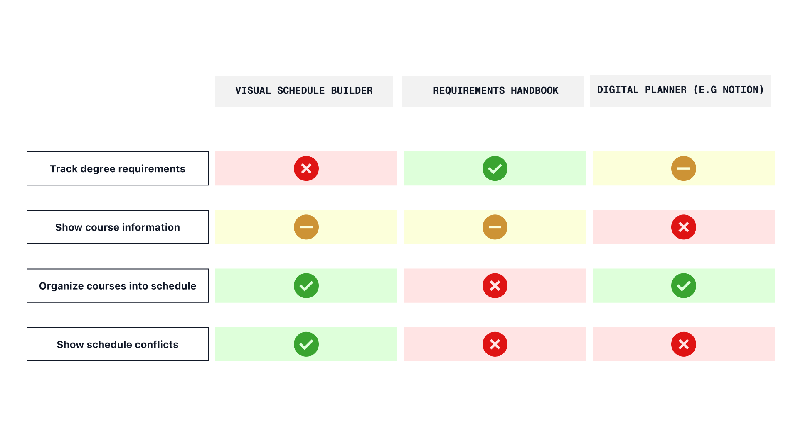

Octobud
An adaptabile learning device made for the needs of students and teachers
Timeline:
9 weeks (April-June 2025)
Tools & Skills:
Figma
Jitter
User Research
User Testing
overview
Technology in the classroom divides more than it provides
With more than 43% of Gen Alpha owning some form of technology before kindergarten, kids are becoming more accustomed to technology in their daily life, including their education. However, with the rise of Chromebooks or iPads in the classroom, which lack proper ways of fostering a cooperative learning environment, there now exists a barrier between students and teachers when it comes to learning.
The question then becomes how do we allow students to be focused using technology while also making it easy and flexible for teachers to use?
Research
I interviewed 6 tutors and teachers who taught children between 5-15, 4 of whom primarily taught students online(Google Meet,Zoom etc) and 2 of whom taught in person.
Children work better when they are engaged
Both online teachers and in-person teachers found that students worked better when they found ways to make the lesson more gamified, such as introducing Kahoots or cooperative learning scenarios.
Tried and true> expensive and new
Both online and in-person teachers shared how important lesson plans are to create a planned learning environment, especially with larger classes. Even if less engaging, having a template design is less expensive and easier to implement across their classroom.
Online learning creates barriers than can't be resolved
A common pain point shared by all the online teachers was the lack of control. Since they can't physically stop them from misusing their devices, a lot of their power in teaching is dependent on student behaviour.
Competitor Analysis
I analysed the three most common tools design students use to plan out their degree on their strengths and weaknesses.Each platform had only one or two strong features present. This reinforces frustrations noted in the user survey about having to cycle through multiple platforms to plan their degree.

Solution
Meet the octobud,a code-and-scanner learning device that allows students and teachers a gamified and flexible learning system for any situation
Process
Realizing the design
When finding the optimal design for the octobud, considerations had to be made on how to balance the input and output system to be simple and obvious enough for a child to use it.
next steps
Connection to existing platforms
Since people, thre would be no immediate roll over to the platform, so adding a function where changes in the could sync up would also imporve productivity. By allowing DESNbook to be the hub of descions, it would futher speed up course planning time fore students, and avoid human err when consulting other course resources.
Takeaways
Don't reinvent the wheel
My early designs were focused on creating something that looked nice before consider how the user would use it. By focusing on the issues of users journey and allowing feedback from students on my designs, the ending product allowed for an experience catered toward those who would use it.